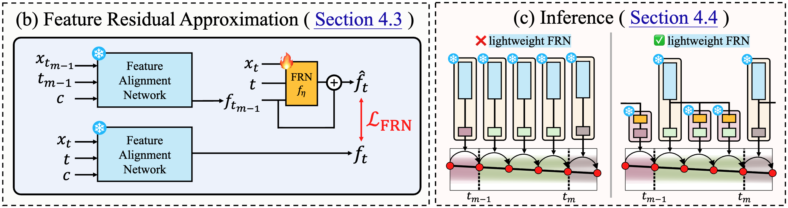
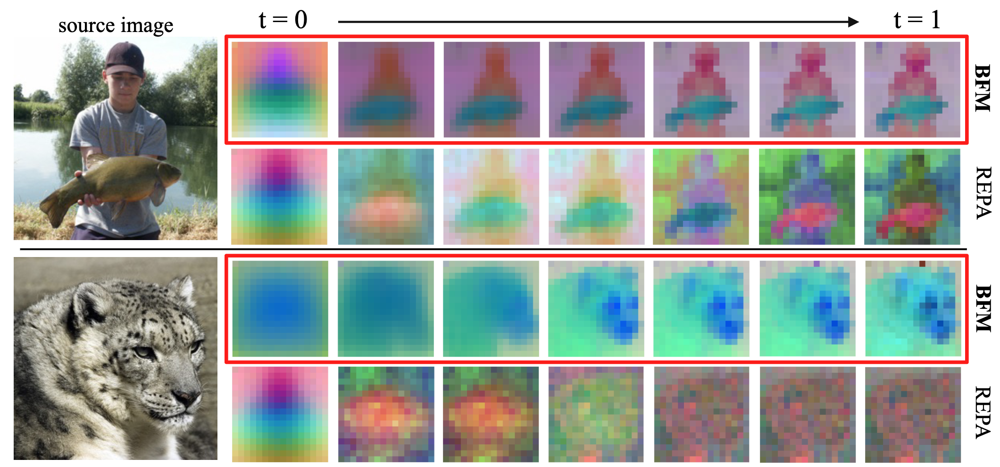
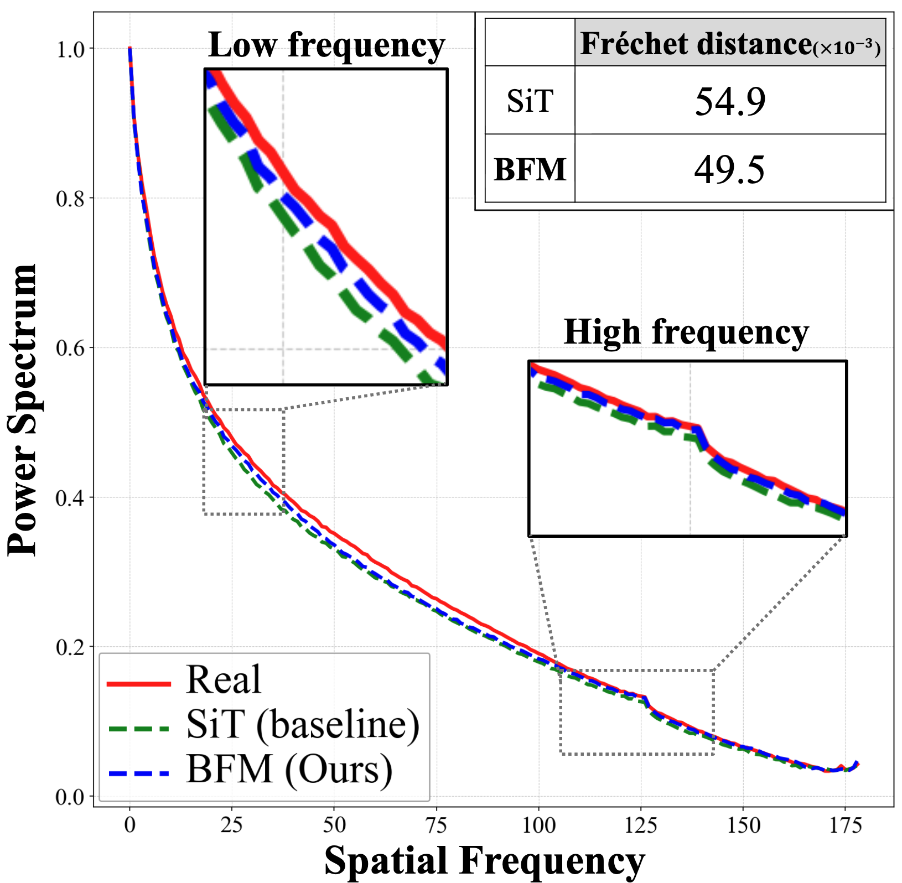

<!DOCTYPE html>
<html lang="en">

<head>
    <meta charset="UTF-8">
    <meta name="viewport" content="width=device-width, initial-scale=1.0">
    <title>Blockwise Flow Matching (BFM)</title>
    <script src="https://unpkg.com/react@18/umd/react.development.js"></script>
    <script src="https://unpkg.com/react-dom@18/umd/react-dom.development.js"></script>
    <script src="https://unpkg.com/@babel/standalone/babel.min.js"></script>
    <script src="https://cdn.tailwindcss.com"></script>
    <script src="https://unpkg.com/framer-motion@10.16.4/dist/framer-motion.js"></script>
    <!-- MathJax for LaTeX rendering -->
    <script type="text/x-mathjax-config">
        MathJax.Hub.Config({
            tex2jax: {
                inlineMath: [['$','$'], ['\\(','\\)']],
                displayMath: [['$$','$$'], ['\\[','\\]']],
                processEscapes: true
            },
            "HTML-CSS": { fonts: ["TeX"] }
        });
    </script>
    <script type="text/javascript" async
        src="https://cdnjs.cloudflare.com/ajax/libs/mathjax/2.7.7/MathJax.js?config=TeX-MML-AM_CHTML"></script>

    <style>
        @import url('https://fonts.googleapis.com/css2?family=Space+Grotesk:wght@300;400;500;600;700&display=swap');
        @import url('https://fonts.googleapis.com/css2?family=JetBrains+Mono:wght@400&display=swap');

        :root {
            --bg: #f5f7fb;
            --panel: #ffffff;
            --ink: #0f172a;
            --muted: #5c6478;
            --accent: #28b4c8;
            --accent-2: #2460f4;
            --line: #dbe2ef;
            --highlight: #ffb347;
            --shadow: 0 18px 60px rgba(26, 76, 125, 0.14);
            --radius: 18px;
        }

        * {
            box-sizing: border-box;
        }

        body {
            margin: 0;
            font-family: "Space Grotesk", "Helvetica Neue", sans-serif;
            background: radial-gradient(circle at 20% 20%, rgba(36, 96, 244, 0.12), transparent 40%),
                radial-gradient(circle at 80% 10%, rgba(40, 180, 200, 0.18), transparent 35%),
                var(--bg);
            color: var(--ink);
            min-height: 100vh;
            -webkit-font-smoothing: antialiased;
        }

        .page {
            max-width: 1200px;
            margin: 0 auto;
            padding: 48px 24px 64px;
        }

        /* Panel Styling */
        .panel {
            background: var(--panel);
            border: 1px solid rgba(16, 24, 40, 0.04);
            border-radius: var(--radius);
            padding: 24px;
            box-shadow: var(--shadow);
            position: relative;
            overflow: hidden;
            margin-bottom: 24px;
        }

        .panel::after {
            content: "";
            position: absolute;
            inset: 0;
            background: radial-gradient(circle at 80% -20%, rgba(36, 96, 244, 0.12), transparent 35%),
                radial-gradient(circle at 0% 0%, rgba(40, 180, 200, 0.08), transparent 30%);
            pointer-events: none;
        }

        /* Typography */
        /* Forced H1 Size */
        h1,
        .hero-title {
            margin: 0;
            font-size: clamp(1.5rem, 6vw, 2.5rem) !important;
            line-height: 1.05 !important;
            letter-spacing: -0.03em !important;
            color: var(--ink) !important;
            font-weight: 700 !important;
        }

        /* UPDATED H2 and H3 Styles */
        h2 {
            font-size: clamp(1rem, 4vw, 1.8rem) !important;
            /* Explicitly set H2 size */
            letter-spacing: -0.02em !important;
            margin-bottom: 1.5rem !important;
            color: var(--ink) !important;
            font-weight: 700 !important;
        }

        h3 {
            margin: 0 0 16px;
            font-size: clamp(1.5rem, 3vw, 1.8rem) !important;
            /* Explicitly set H3 size */
            letter-spacing: -0.01em;
            color: var(--ink);
            font-weight: 700 !important;
        }

        h4 {
            font-size: 1.3rem !important;
            font-weight: 500 !important;
            margin-bottom: 0.5rem;
            color: var(--ink);
        }

        p {
            margin: 0 0 16px;
            color: var(--muted);
            line-height: 1.6;
            font-size: 1.05rem;
        }

        p.lead {
            margin: 14px 0 24px;
            color: var(--muted);
            font-size: 1.15rem;
            line-height: 1.5;
            max-width: 600px;
        }

        /* Header Elements */
        header {
            display: grid;
            grid-template-columns: 1.2fr 0.8fr;
            gap: 60px;
            align-items: start;
            margin-bottom: 40px;
            padding: 40px !important;
        }

        @media (max-width: 900px) {
            header {
                grid-template-columns: 1fr;
                gap: 30px;
            }
        }

        .badge {
            display: inline-flex;
            align-items: center;
            gap: 8px;
            padding: 6px 12px;
            border-radius: 6px;
            background: #eff6ff;
            color: var(--accent-2);
            font-weight: 600;
            font-size: 0.85rem;
            margin-bottom: 20px;
        }

        .tagline {
            display: flex;
            flex-direction: column;
            gap: 8px;
            margin: 24px 0 0;
            align-items: flex-start;
        }

        .tag {
            padding: 6px 14px;
            border-radius: 999px;
            border: 1px solid #d2daeb;
            color: #34405a;
            font-weight: 500;
            background: white;
            font-size: 0.9rem;
        }

        .insight {
            background: #0f172a;
            color: #f5f7fb;
            border-radius: 24px;
            padding: 32px;
            line-height: 1.6;
            box-shadow: 0 20px 50px rgba(15, 23, 42, 0.3);
            position: relative;
            z-index: 1;
            height: 100%;
            display: flex;
            flex-direction: column;
            justify-content: center;
        }

        .insight strong {
            color: #7ae6ff;
            display: block;
            margin-bottom: 12px;
            font-size: 1.1rem;
        }

        .insight p {
            color: #cbd5e1;
            margin: 0 0 16px;
            font-size: 0.95rem;
            line-height: 1.7;
        }

        .insight h4 {
            color: white;
            margin: 20px 0 8px;
            font-size: 1rem;
            font-weight: 700;
        }

        /* Buttons */
        .btn-group {
            display: flex;
            gap: 12px;
            flex-wrap: wrap;
            margin-top: 24px;
        }

        .btn {
            padding: 12px 24px;
            border-radius: 10px;
            border: 1px solid #d4daea;
            background: white;
            color: #1f2a44;
            font-weight: 600;
            cursor: pointer;
            transition: 0.15s ease;
            text-decoration: none;
            display: inline-flex;
            align-items: center;
            gap: 8px;
            font-size: 1rem;
        }

        .btn:hover {
            background: #f8fbff;
            border-color: var(--accent-2);
            color: var(--accent-2);
            transform: translateY(-1px);
        }

        .btn.primary {
            background: var(--accent-2);
            color: white;
            border-color: var(--accent-2);
        }

        .btn.primary:hover {
            background: #1b50d8;
            shadow: 0 4px 12px rgba(36, 96, 244, 0.3);
        }

        /* Demo Area */
        .demo-grid {
            display: grid;
            grid-template-columns: 1fr 1fr;
            gap: 20px;
        }

        @media (max-width: 768px) {
            .demo-grid {
                grid-template-columns: 1fr;
            }
        }

        .demo-canvas {
            position: relative;
            height: 280px;
            background: radial-gradient(circle at 20% 40%, rgba(40, 180, 200, 0.1), transparent 40%), #f8fbff;
            border-radius: 14px;
            border: 1px solid #d9e2f2;
            overflow: hidden;
            display: flex;
            flex-direction: column;
            align-items: center;
            justify-content: center;
        }

        .code-block {
            background: #0f172a;
            color: #d3e4ff;
            padding: 20px;
            border-radius: 14px;
            overflow-x: auto;
            font-family: 'JetBrains Mono', monospace;
            font-size: 0.9rem;
            line-height: 1.6;
        }

        .bibtex {
            background: #f4f7ff;
            color: #1b2640;
            padding: 20px;
            border-radius: 12px;
            overflow-x: auto;
            font-family: 'JetBrains Mono', monospace;
            font-size: 0.85rem;
            line-height: 1.5;
            border: 1px solid #e0e7ff;
            white-space: pre;
            /* Fixes the line break issue */
        }

        .grid-2 {
            display: grid;
            grid-template-columns: 1fr 1fr;
            gap: 24px;
        }

        @media (max-width: 768px) {
            .grid-2 {
                grid-template-columns: 1fr;
            }
        }

        /* Utility */
        .text-accent {
            color: var(--accent-2);
        }

        .text-highlight {
            color: var(--highlight);
        }

        .flex-center {
            display: flex;
            align-items: center;
            justify-content: center;
        }

        /* Motivation Box Styles */
        .motivation-box {
            background: #fff;
            border: 1px solid #e2e8f0;
            border-radius: 16px;
            padding: 24px;
            margin-bottom: 32px;
            display: grid;
            grid-template-columns: 1fr 1fr;
            gap: 24px;
        }

        @media (max-width: 768px) {
            .motivation-box {
                grid-template-columns: 1fr;
            }
        }

        .motivation-col h5 {
            font-size: 1rem;
            font-weight: 700;
            margin-bottom: 16px;
            display: flex;
            align-items: center;
            gap: 8px;
        }

        .motivation-list {
            list-style: none;
            padding: 0;
            margin: 0;
        }

        .motivation-list li {
            position: relative;
            padding-left: 24px;
            margin-bottom: 12px;
            font-size: 0.95rem;
            color: var(--muted);
            line-height: 1.5;
        }

        .motivation-list li::before {
            content: "•";
            position: absolute;
            left: 6px;
            color: #cbd5e1;
            font-weight: bold;
        }

        /* Custom bullets */
        .list-bad li::before {
            content: "⚠️";
            font-size: 0.8rem;
            left: 2px;
        }

        .list-good li::before {
            content: "✅";
            font-size: 0.8rem;
            left: 2px;
        }
    </style>
</head>

<body>
    <div id="root"></div>

    <script type="text/babel">
        const { useState, useEffect, useRef } = React;
        const { motion, AnimatePresence } = window.Motion;

        // --- Icons (SVG) ---
        const IconWrapper = ({ children, size = 20 }) => (
            <svg xmlns="http://www.w3.org/2000/svg" width={size} height={size} viewBox="0 0 24 24" fill="none" stroke="currentColor" strokeWidth="2" strokeLinecap="round" strokeLinejoin="round">{children}</svg>
        );
        const FileText = () => <IconWrapper><path d="M14.5 2H6a2 2 0 0 0-2 2v16a2 2 0 0 0 2 2h12a2 2 0 0 0 2-2V7.5L14.5 2z" /><polyline points="14 2 14 8 20 8" /><line x1="16" y1="13" x2="8" y2="13" /><line x1="16" y1="17" x2="8" y2="17" /><line x1="10" y1="9" x2="8" y2="9" /></IconWrapper>;
        const Github = () => <IconWrapper><path d="M9 19c-5 1.5-5-2.5-7-3m14 6v-3.87a3.37 3.37 0 0 0-.94-2.61c3.14-.35 6.44-1.54 6.44-7A5.44 5.44 0 0 0 20 4.77 5.07 5.07 0 0 0 19.91 1S18.73.65 16 2.48a13.38 13.38 0 0 0-7 0C6.27.65 5.09 1 5.09 1A5.07 5.07 0 0 0 5 4.77a5.44 5.44 0 0 0-1.5 3.78c0 5.42 3.3 6.61 6.44 7A3.37 3.37 0 0 0 9 18.13V22" /></IconWrapper>;
        const Play = () => <IconWrapper><polygon points="5 3 19 12 5 21 5 3" /></IconWrapper>;
        const Pause = () => <IconWrapper><rect x="6" y="4" width="4" height="16" /><rect x="14" y="4" width="4" height="16" /></IconWrapper>;
        const Refresh = () => <IconWrapper><polyline points="23 4 23 10 17 10" /><polyline points="1 20 1 14 7 14" /><path d="M3.51 9a9 9 0 0 1 14.85-3.36L23 10M1 14l4.64 4.36A9 9 0 0 0 20.49 15" /></IconWrapper>;
        const Layers = () => <IconWrapper><polygon points="12 2 2 7 12 12 22 7 12 2" /><polyline points="2 17 12 22 22 17" /><polyline points="2 12 12 17 22 12" /></IconWrapper>;
        const Zap = () => <IconWrapper><polygon points="13 2 3 14 12 14 11 22 21 10 12 10 13 2" /></IconWrapper>;
        const Image = () => <IconWrapper><rect x="3" y="3" width="18" height="18" rx="2" ry="2" /><circle cx="8.5" cy="8.5" r="1.5" /><polyline points="21 15 16 10 5 21" /></IconWrapper>;
        const AlertTriangle = () => <IconWrapper><path d="M10.29 3.86L1.82 18a2 2 0 0 0 1.71 3h16.94a2 2 0 0 0 1.71-3L13.71 3.86a2 2 0 0 0-3.42 0z" /><line x1="12" y1="9" x2="12" y2="13" /><line x1="12" y1="17" x2="12.01" y2="17" /></IconWrapper>;
        const Rocket = () => <IconWrapper><path d="M4.5 16.5c-1.5 1.26-2 5-2 5s3.74-.5 5-2c.71-.84.7-2.13-.09-2.91a2.18 2.18 0 0 0-2.91-.09z" /><path d="m12 15-3-3a22 22 0 0 1 2-3.95A12.88 12.88 0 0 1 22 2c0 2.72-.78 7.5-6 11a22.35 22.35 0 0 1-4 2z" /><path d="M9 12H4s.55-3.03 2-4c1.62-1.08 5 0 5 0" /><path d="M12 15v5s3.03-.55 4-2c1.08-1.62 0-5 0-5" /></IconWrapper>;

        // --- Components ---

        const Header = () => (
            <header className="panel">
                <div>
                    <div className="badge">NeurIPS 2025 Conference Paper</div>
                    <h1 className="hero-title" style={{ marginBottom: '12px' }}>Blockwise Flow Matching:</h1>
                    <p className="lead">
                        Improving Flow Matching Models For <span className="text-accent" style={{ fontWeight: 600 }}>Efficient High-Quality Generation</span>.
                    </p>

                    <div style={{ fontSize: '0.95rem', color: 'var(--muted)', fontWeight: 500, marginBottom: '24px', lineHeight: '1.6' }}>
                        <span style={{ color: 'var(--ink)', fontWeight: 700 }}>Dogyun Park</span>, Taehoon Lee, Minseok Joo,Hyunwoo J. Kim
                        <div style={{ fontSize: '0.85rem', marginTop: '4px', opacity: 0.7 }}>Korea University & KAIST</div>
                    </div>

                    <div className="btn-group">
                        <a href="https://arxiv.org/abs/2510.21167" target="_blank" className="btn primary">
                            <FileText /> Read Paper
                        </a>
                        <a href="https://github.com/mlvlab/Blockwise-Flow-Matching" target="_blank" className="btn">
                            <Github /> View Code
                        </a>
                    </div>
                </div>

                <div className="insight">
                    <div>
                        <strong>Paper Motivation</strong>
                        <p>
                            Standard flow matching model relies on a single large network that must understand all noise levels at once, making inference heavy.
                        </p>
                        <h4>Solution</h4>
                        <p style={{ marginBottom: 0 }}>
                            Blockwise Flow Matching slices timesteps into multiple segments—each segment is modeled by a lightweight specialized network.
                        </p>
                    </div>
                </div>
            </header>
        );

        const InteractiveDemo = () => {
            const [isPlaying, setIsPlaying] = useState(false);
            const [vanillaProgress, setVanillaProgress] = useState(0);
            const [bfmProgress, setBfmProgress] = useState(0);
            const requestRef = useRef();

            const animate = () => {
                // Vanilla is SLOW (heavy load)
                setVanillaProgress(prev => {
                    if (prev >= 100) return 0;
                    return prev + 0.2; // Slow speed
                });

                // BFM is FAST (lightweight)
                setBfmProgress(prev => {
                    if (prev >= 100) return 0;
                    return prev + 0.5; // Fast speed
                });

                if (isPlaying) {
                    requestRef.current = requestAnimationFrame(animate);
                }
            };

            useEffect(() => {
                if (isPlaying) {
                    requestRef.current = requestAnimationFrame(animate);
                } else {
                    cancelAnimationFrame(requestRef.current);
                }
                return () => cancelAnimationFrame(requestRef.current);
            }, [isPlaying]);

            const reset = () => {
                setIsPlaying(false);
                setVanillaProgress(0);
                setBfmProgress(0);
            };

            const togglePlay = () => {
                setIsPlaying(!isPlaying);
            };

            const getActiveBlockIndex = (prog) => Math.min(Math.floor(prog / 20), 4);
            const activeBlock = getActiveBlockIndex(bfmProgress);
            const blockColors = ["#2460f4", "#28b4c8", "#26c8b0", "#74e4a2", "#ffaa64"];

            return (
                <section className="panel">
                    <div style={{ display: 'flex', justifyContent: 'space-between', alignItems: 'center', marginBottom: '24px' }}>
                        <div>
                            <h3>⚡️ Conceptual Comparison: Inference Dynamics</h3>

                        </div>
                        <div className="btn-group" style={{ marginTop: 0 }}>
                            <button onClick={togglePlay} className="btn">
                                {isPlaying ? <Pause /> : <Play />}
                                {isPlaying ? "Pause" : "Start Animation"}
                            </button>
                            <button onClick={reset} className="btn"><Refresh /></button>
                        </div>
                    </div>

                    <div className="demo-grid">
                        {/* Vanilla FM - SLOW & HEAVY */}
                        <div>
                            <div style={{ textAlign: 'center', marginBottom: '10px', fontSize: '0.9rem', fontWeight: 700, letterSpacing: '0.05em', color: 'var(--muted)', textTransform: 'uppercase' }}>Vanilla Flow Matching (Slow)</div>
                            <div className="demo-canvas">
                                {/* Background Grid */}
                                <div style={{ position: 'absolute', inset: 0, opacity: 0.4, backgroundImage: 'radial-gradient(#cbd5e1 1px, transparent 1px)', backgroundSize: '20px 20px' }}></div>

                                {/* Timeline */}
                                <div style={{ position: 'absolute', width: '80%', height: '2px', background: '#dbe2ef', top: '50%', left: '10%' }}></div>
                                <div style={{ position: 'absolute', top: '55%', left: '10%', fontSize: '12px', color: '#94a3b8', fontFamily: 'monospace' }}>t=0</div>
                                <div style={{ position: 'absolute', top: '55%', right: '10%', fontSize: '12px', color: '#94a3b8', fontFamily: 'monospace' }}>t=1</div>

                                {/* Heavy Particle */}
                                <motion.div
                                    style={{
                                        position: 'absolute', top: '50%', left: '10%', width: '32px', height: '32px',
                                        marginTop: '-16px', marginLeft: '-16px', borderRadius: '50%',
                                        background: 'transparent', border: '6px solid #0f172a',
                                        boxShadow: '0 4px 12px rgba(0,0,0,0.2)',
                                        left: `${10 + (vanillaProgress * 0.8)}%`
                                    }}
                                />

                                {/* Model Block - ALWAYS ACTIVE */}
                                <div style={{
                                    position: 'absolute', bottom: '30px', width: '80%', height: '60px',
                                    background: '#0f172a', borderRadius: '12px',
                                    display: 'flex', alignItems: 'center', justifyContent: 'center',
                                    color: 'white', fontWeight: 600,
                                    boxShadow: '0 10px 30px rgba(15, 23, 42, 0.3)'
                                }}>
                                    Single Large Network
                                </div>
                            </div>
                        </div>

                        {/* Blockwise FM - FAST & LIGHT */}
                        <div>
                            <div style={{ textAlign: 'center', marginBottom: '10px', fontSize: '0.9rem', fontWeight: 700, letterSpacing: '0.05em', color: 'var(--accent-2)', textTransform: 'uppercase' }}>Blockwise Flow Matching (Fast)</div>
                            <div className="demo-canvas">
                                {/* Background Grid */}
                                <div style={{ position: 'absolute', inset: 0, opacity: 0.4, backgroundImage: 'radial-gradient(#cbd5e1 1px, transparent 1px)', backgroundSize: '20px 20px' }}></div>

                                {/* Timeline */}
                                <div style={{ position: 'absolute', width: '80%', height: '2px', background: '#dbe2ef', top: '50%', left: '10%' }}></div>
                                <div style={{ position: 'absolute', top: '55%', left: '10%', fontSize: '12px', color: '#94a3b8', fontFamily: 'monospace' }}>t=0</div>
                                <div style={{ position: 'absolute', top: '55%', right: '10%', fontSize: '12px', color: '#94a3b8', fontFamily: 'monospace' }}>t=1</div>

                                {/* Light Particle */}
                                <motion.div
                                    style={{
                                        position: 'absolute', top: '50%', left: '10%', width: '16px', height: '16px',
                                        marginTop: '-8px', marginLeft: '-8px', borderRadius: '50%',
                                        background: blockColors[activeBlock],
                                        boxShadow: `0 0 15px ${blockColors[activeBlock]}`,
                                        left: `${10 + (bfmProgress * 0.8)}%`
                                    }}
                                />

                                {/* Model Blocks - DYNAMIC SWITCHING */}
                                <div style={{ position: 'absolute', bottom: '30px', width: '80%', height: '60px', display: 'flex', gap: '6px' }}>
                                    {[0, 1, 2, 3, 4].map(idx => (
                                        <div key={idx} style={{
                                            flex: 1, borderRadius: '8px', display: 'flex', alignItems: 'center', justifyContent: 'center', fontSize: '0.8rem', fontWeight: 700,
                                            background: activeBlock === idx ? blockColors[idx] : '#e2e8f0',
                                            color: activeBlock === idx ? 'white' : '#94a3b8',
                                            transform: activeBlock === idx ? 'translateY(-6px) scale(1.05)' : 'none',
                                            boxShadow: activeBlock === idx ? `0 8px 20px ${blockColors[idx]}40` : 'none',
                                            opacity: activeBlock === idx ? 1 : 0.4,
                                            transition: 'all 0.1s'
                                        }}>
                                            Network {idx + 1}
                                        </div>
                                    ))}
                                </div>
                            </div>
                        </div>
                    </div>
                </section>
            );
        };

        // NEW: Inference Comparison Visual
        const InferenceVisual = () => {
            const [step, setStep] = useState(0);
            const totalSteps = 4;

            useEffect(() => {
                const interval = setInterval(() => {
                    setStep(s => (s + 1) % totalSteps);
                }, 1000); // Update step every second
                return () => clearInterval(interval);
            }, []);

            return (
                <div className="grid-2" style={{ marginTop: '30px' }}>
                    {/* Case 1: Without FRA (Standard) */}
                    <div className="panel" style={{ background: '#fff', textAlign: 'center', padding: '24px', border: '1px solid #ef4444' }}>
                        <h4 style={{ marginBottom: '20px', color: '#ef4444', fontSize: '1rem', display: 'flex', alignItems: 'center', justifyContent: 'center', gap: '8px' }}>
                            <span style={{ fontSize: '1.2em' }}>❌</span> Without Residual Approx.
                        </h4>
                        <div style={{ display: 'flex', justifyContent: 'center', gap: '12px', height: '140px', alignItems: 'flex-end' }}>
                            {[0, 1, 2, 3].map(i => (
                                <div key={i} style={{ opacity: step === i ? 1 : 0.3, transition: 'opacity 0.3s', display: 'flex', flexDirection: 'column', alignItems: 'center' }}>
                                    {/* Stack: Alignment Net + Velocity Net */}
                                    <div style={{
                                        width: '50px', height: '60px', background: '#3b82f6',
                                        borderRadius: '6px', marginBottom: '4px',
                                        display: 'flex', alignItems: 'center', justifyContent: 'center',
                                        color: 'white', fontSize: '10px', flexDirection: 'column',
                                        boxShadow: step === i ? '0 4px 12px rgba(59, 130, 246, 0.4)' : 'none'
                                    }}>
                                        <div style={{ fontWeight: 'bold' }}>$f_\phi$</div>
                                        <div style={{ fontSize: '8px', opacity: 0.8 }}>Heavy</div>
                                    </div>
                                    <div style={{
                                        width: '50px', height: '40px', background: '#10b981',
                                        borderRadius: '6px', marginBottom: '8px',
                                        display: 'flex', alignItems: 'center', justifyContent: 'center',
                                        color: 'white', fontSize: '10px'
                                    }}>
                                        $v_\theta$
                                    </div>
                                    <div style={{ fontSize: '10px', color: 'var(--muted)', fontWeight: 'bold' }}>Step {i}</div>
                                </div>
                            ))}
                        </div>
                        <div style={{ marginTop: '16px', fontSize: '0.85rem', color: '#5c6478', padding: '12px', background: '#fef2f2', borderRadius: '8px' }}>
                            <strong>Cost:</strong> $f_\phi$ (Heavy) runs at <span style={{ color: '#ef4444' }}>every step</span>.
                        </div>
                    </div>

                    {/* Case 2: With FRA (Ours) */}
                    <div className="panel" style={{ background: '#fff', textAlign: 'center', padding: '24px', border: '1px solid #10b981' }}>
                        <h4 style={{ marginBottom: '20px', color: '#10b981', fontSize: '1rem', display: 'flex', alignItems: 'center', justifyContent: 'center', gap: '8px' }}>
                            <span style={{ fontSize: '1.2em' }}>✅</span> With Residual Approx.
                        </h4>
                        <div style={{ display: 'flex', justifyContent: 'center', gap: '12px', height: '140px', alignItems: 'flex-end' }}>
                            {[0, 1, 2, 3].map(i => (
                                <div key={i} style={{ opacity: step === i ? 1 : 0.3, transition: 'opacity 0.3s', display: 'flex', flexDirection: 'column', alignItems: 'center' }}>
                                    {/* Logic: Only first step is Heavy, others are Light */}
                                    {i === 0 ? (
                                        <div style={{
                                            width: '50px', height: '60px', background: '#3b82f6',
                                            borderRadius: '6px', marginBottom: '4px',
                                            display: 'flex', alignItems: 'center', justifyContent: 'center',
                                            color: 'white', fontSize: '10px', flexDirection: 'column',
                                            boxShadow: step === i ? '0 4px 12px rgba(59, 130, 246, 0.4)' : 'none'
                                        }}>
                                            <div style={{ fontWeight: 'bold' }}>$f_\phi$</div>
                                            <div style={{ fontSize: '8px', opacity: 0.8 }}>Heavy</div>
                                        </div>
                                    ) : (
                                        // Placeholder for height alignment + Small block
                                        <div style={{ height: '60px', display: 'flex', flexDirection: 'column', justifyContent: 'flex-end', marginBottom: '4px' }}>
                                            <div style={{
                                                width: '50px', height: '25px', background: '#f59e0b',
                                                borderRadius: '6px',
                                                display: 'flex', alignItems: 'center', justifyContent: 'center',
                                                color: 'white', fontSize: '10px'
                                            }}>
                                                $f_\eta$
                                            </div>
                                        </div>
                                    )}

                                    <div style={{
                                        width: '50px', height: '40px', background: '#10b981',
                                        borderRadius: '6px', marginBottom: '8px',
                                        display: 'flex', alignItems: 'center', justifyContent: 'center',
                                        color: 'white', fontSize: '10px'
                                    }}>
                                        $v_\theta$
                                    </div>
                                    <div style={{ fontSize: '10px', color: 'var(--muted)', fontWeight: 'bold' }}>Step {i}</div>
                                </div>
                            ))}
                        </div>
                        <div style={{ marginTop: '16px', fontSize: '0.85rem', color: '#5c6478', padding: '12px', background: '#f0fdf4', borderRadius: '8px' }}>
                            <strong>Cost:</strong> $f_\phi$ runs <span style={{ color: '#10b981' }}>once</span>. Lightweight $f_\eta$ used for others.
                        </div>
                    </div>
                </div>
            );
        };

        const Motivation = () => {
            return (
                <section className="panel">
                    <h3>Method Overview</h3>

                    {/* Motivation Comparison Box */}
                    <div className="motivation-box">
                        <div className="motivation-col">
                            <h5 style={{ color: '#1f2a44' }}><AlertTriangle size={16} className="text-red-500" /> Problems of Standard Flow Matching</h5>
                            <ul className="motivation-list list-bad">
                                <li><strong>No specialization:</strong> Single model handles different regimes across timesteps, making it
                                    difficult to capture both global structure and fine details.</li>
                                <li><strong>Expensive and slow sampling:</strong> Inference is costly because we run the whole large model at every step.</li>
                            </ul>
                        </div>
                        <div className="motivation-col" style={{ background: '#f0f9ff', borderRadius: '12px', padding: '16px', margin: '-16px' }}>
                            <h5 style={{ color: 'var(--accent-2)' }}><Rocket size={16} /> Core Idea: Blockwise Flow Matching</h5>
                            <ul className="motivation-list list-good">
                                <li><strong>Specialized over time:</strong> Smaller, specialized models focus on narrower regimes for more accurate prediction.</li>
                                <li><strong>Faster and cheaper sampling:</strong> At each step, only a lightweight model runs, making inference faster and less expensive.</li>
                            </ul>
                        </div>
                    </div>
                </section>
            );
        };

        const Methodology = () => {
            return (
                <section className="panel">
                    <h3>Architecture Design & Training Pipeline</h3>

                    <div className="grid-2" style={{ marginTop: '24px', alignItems: 'center' }}>
                        <div>
                            <div style={{ display: 'flex', alignItems: 'center', gap: '12px', marginBottom: '12px' }}>
                                <div style={{ padding: '8px', background: 'rgba(36,96,244,0.1)', borderRadius: '8px', color: 'var(--accent-2)' }}><Layers /></div>
                                <h4 style={{ margin: 0, fontSize: '1.1rem' }}>Train BFM with Semantic Feature Guidance</h4>
                            </div>
                            <p>
                                Each specialized network = <strong>Shared Feature Alignment Network + Specialized Velocity Network.</strong> <br />
                                <p dangerouslySetInnerHTML={{ __html: "Feature Alignment Network $f_\\phi$ is trained to align its output to DINOv2 features (<strong>$L_{align}$</strong>). <br /> Velocity Network is conditioned on Feature Alignment Network's output, called semantic feature guidance (SemFeat), and estimates the velocity field (<strong>$L_{BFM}$</strong>)." }} />
                            </p>
                        </div>
                        <div style={{ background: '#f8fbff', padding: '20px', borderRadius: '14px', border: '1px solid #dce5f2' }}>
                            
                            <div className="note" style={{ textAlign: 'center', marginTop: '10px', fontSize: '0.85rem', color: 'var(--muted)' }}>Figure 1: BFM Architecture</div>
                        </div>
                    </div>

                    <div style={{ height: '1px', background: 'var(--line)', margin: '30px 0' }}></div>

                    <div className="grid-2" style={{ alignItems: 'center' }}>
                        <div style={{ order: 2 }}>
                            <div style={{ display: 'flex', alignItems: 'center', gap: '12px', marginBottom: '12px' }}>
                                <div style={{ padding: '8px', background: 'rgba(255, 179, 71, 0.15)', borderRadius: '8px', color: '#e6921c' }}><Zap /></div>
                                <h4 style={{ margin: 0, fontSize: '1.1rem' }}>Train Feature Residual Network</h4>
                            </div>
                            <p>
                                <p dangerouslySetInnerHTML={{ __html: "During inference, evaluating the feature alignment network $f_\\phi$ at every step is costly. <br /> <strong>Feature Residual Network (FRN)</strong> is a lightweight network $f_\\eta$ to approximate the output of Feature Alignment Network via residual: $\\hat{f}_t = f_{t_{m-1}} + b_m(t) \\cdot f_\\eta(x_{t}, c).$" }} />
                            </p>
                            <p>
                                This allows $f_φ$ to run only once per segment, slashing inference cost while maintaining high fidelity.
                            </p>
                        </div>
                        <div style={{ order: 1, background: '#f8fbff', padding: '20px', borderRadius: '14px', border: '1px solid #dce5f2' }}>
                            
                            <div className="note" style={{ textAlign: 'center', marginTop: '10px', fontSize: '0.85rem', color: 'var(--muted)' }}>Figure 2: (b) Feature residual network learns to approximate the output of feature alignment newtork via residual connection. (c) By using FRN, we can bypass the computation of FAN, and thus generate more efficiently.</div>
                        </div>
                    </div>

                    <div style={{ height: '1px', margin: '20px 0' }}></div>
                    <h3 style={{ marginBottom: '32px' }}>Inference w/wo Feature Residual Network</h3>
                    {/* NEW VISUAL COMPONENT INSERTED HERE */}
                    <InferenceVisual />
                </section>
            );
        };

        const ResultsChart = () => {
            // Using colors from new palette
            const baselines = [
                { name: 'SiT', flops: 115, fid: 2.06 },
                { name: 'REPA', flops: 115, fid: 1.80 },
                { name: 'DiT', flops: 115, fid: 2.27 },
                { name: 'FiTv2', flops: 147, fid: 2.26 },
            ];
            const ours = [
                { name: 'BFM-SF', flops: 108, fid: 1.75 },
                { name: 'BFM-SF-RA', flops: 38, fid: 2.03 },
            ];
            const width = 800;
            const height = 400;
            const padding = 50;
            const scaleX = (flops) => padding + (flops / 160) * (width - 2 * padding);
            const scaleY = (fid) => height - padding - ((fid - 1.5) / 1.2) * (height - 2 * padding);

            return (
                <section className="panel">
                    <h3>Pareto Frontier</h3>
                    <p>BFM pushes the boundary of Quality vs. Efficiency (ImageNet 256×256).</p>

                    <div className="demo-canvas" style={{ background: 'white', height: 'auto', padding: '20px' }}>
                        <svg viewBox={`0 0 ${width} ${height}`} style={{ width: '100%', height: 'auto' }}>
                            {/* Ideal Zone */}
                            <defs>
                                <linearGradient id="idealZone" x1="0%" y1="100%" x2="100%" y2="0%">
                                    <stop offset="0%" stopColor="#28b4c8" stopOpacity="0.1" />
                                    <stop offset="50%" stopColor="#ffffff" stopOpacity="0" />
                                </linearGradient>
                            </defs>
                            <rect x={padding} y={padding} width={width - 2 * padding} height={height - 2 * padding} fill="url(#idealZone)" />

                            {/* Axes */}
                            <line x1={padding} y1={height - padding} x2={width - padding} y2={height - padding} stroke="#dbe2ef" strokeWidth="2" />
                            <line x1={padding} y1={padding} x2={padding} y2={height - padding} stroke="#dbe2ef" strokeWidth="2" />
                            <text x={width / 2} y={height - 10} textAnchor="middle" fontSize="12" fill="#5c6478" fontWeight="600">Inference Cost (GFLOPs) → Lower is Better</text>
                            <text x={15} y={height / 2} textAnchor="middle" transform={`rotate(-90, 15, ${height / 2})`} fontSize="12" fill="#5c6478" fontWeight="600">FID Score → Lower is Better</text>

                            {/* Grid Lines - Transparent Dashed */}
                            {[0, 40, 80, 120, 160].map((val, i) => (
                                <g key={`grid-x-${i}`}>
                                    <line x1={scaleX(val)} y1={padding} x2={scaleX(val)} y2={height - padding} stroke="#f1f5f9" strokeDasharray="4" strokeOpacity="0.5" />
                                    <text x={scaleX(val)} y={height - padding + 15} textAnchor="middle" fontSize="10" fill="#94a3b8">{val}</text>
                                </g>
                            ))}
                            {[1.6, 1.8, 2.0, 2.2, 2.4].map((val, i) => (
                                <g key={`grid-y-${i}`}>
                                    <line x1={padding} y1={scaleY(val)} x2={width - padding} y2={scaleY(val)} stroke="#f1f5f9" strokeDasharray="4" strokeOpacity="0.5" />
                                    <text x={padding - 10} y={scaleY(val) + 4} textAnchor="end" fontSize="10" fill="#94a3b8">{val}</text>
                                </g>
                            ))}

                            {/* Points */}
                            {baselines.map((p, i) => (
                                <g key={i}>
                                    <circle cx={scaleX(p.flops)} cy={scaleY(p.fid)} r="6" fill="#cbd5e1" stroke="#94a3b8" strokeWidth="1" />
                                    <text x={scaleX(p.flops)} y={scaleY(p.fid) - 10} textAnchor="middle" fontSize="10" fill="#5c6478">{p.name}</text>
                                </g>
                            ))}
                            {ours.map((p, i) => (
                                <g key={`ours-${i}`}>
                                    <circle cx={scaleX(p.flops)} cy={scaleY(p.fid)} r="8" fill="var(--accent-2)" stroke="white" strokeWidth="2" />
                                    <text x={scaleX(p.flops)} y={scaleY(p.fid) - 12} textAnchor="middle" fontSize="11" fill="var(--accent-2)" fontWeight="700">{p.name}</text>
                                </g>
                            ))}

                            {/* Curve */}
                            <path d={`M ${scaleX(38)} ${scaleY(2.03)} Q ${scaleX(70)} ${scaleY(1.85)} ${scaleX(108)} ${scaleY(1.75)}`} fill="none" stroke="var(--accent-2)" strokeWidth="2" strokeDasharray="5,5" opacity="0.6" />
                        </svg>
                    </div>
                </section>
            );
        };

        const QuantitativeVisuals = () => {
            const [hoveredSeg, setHoveredSeg] = useState(null);
            const specData = [
                { seg: 'seg0', bfm: 0.658, sit: 0.675 },
                { seg: 'seg1', bfm: 0.653, sit: 0.668 },
                { seg: 'seg2', bfm: 0.732, sit: 0.740 },
                { seg: 'seg3', bfm: 0.805, sit: 0.812 },
                { seg: 'seg4', bfm: 0.860, sit: 0.870 },
                { seg: 'seg5', bfm: 0.925, sit: 0.942 },
            ];
            const efficiencyData = [
                { name: 'SiT-XL/2', time: 44.51, color: '#5c6478', height: 100, label: 'Baseline' },
                { name: 'BFM-XL/2 (SF)', time: 40.37, color: '#28b4c8', height: 90.7, speedup: '1.1x', delta: '4.1s', textColor: '#28b4c8' },
                { name: 'BFM-XL/2 (SF-RA)', time: 19.42, color: '#2460f4', height: 43.6, speedup: '2.3x', delta: '25.1s', textColor: '#2460f4' },
            ];

            return (
                <section className="panel">
                    <h3 style={{ marginBottom: '5px' }}>Detailed Analysis</h3>
                    <div className="grid-2">
                        {/* Left Column: Network Spec */}
                        <div>
                            <h4 style={{ textAlign: 'left', marginBottom: '8px' }}>Network Specialization</h4>
                            <p style={{ textAlign: 'left', fontSize: '1.0rem', color: 'var(--muted)', marginBottom: '20px' }}>BFM achieves lower flow-matching loss across segments than standard flow matching. On average, BFM achieves 3% lower loss.</p>


                            {/* Chart Container */}
                            <div style={{ height: '280px', display: 'flex', alignItems: 'flex-end', gap: '8px', padding: '20px 10px 20px 40px', position: 'relative', marginRight: '16px' }}>
                                {specData.map((d, i) => (
                                    <div key={i} style={{ flex: 1, height: '100%', display: 'flex', gap: '4px', alignItems: 'flex-end', position: 'relative', zIndex: 1 }} onMouseEnter={() => setHoveredSeg(i)} onMouseLeave={() => setHoveredSeg(null)}>
                                        {/* Bars scaled to 0.4 range (1.0 - 0.6) */}
                                        <div style={{ width: '50%', height: `${(d.bfm - 0.6) / 0.4 * 100}%`, background: '#2460f4', borderRadius: '4px 4px 0 0' }}></div>
                                        <div style={{ width: '50%', height: `${(d.sit - 0.6) / 0.4 * 100}%`, background: '#ffb347', borderRadius: '4px 4px 0 0' }}></div>

                                        {/* X-axis Label positioned below the plot area */}
                                        <div style={{ position: 'absolute', top: '100%', left: '50%', transform: 'translateX(-50%)', marginTop: '8px', fontSize: '0.7rem', color: '#5c6478', fontWeight: 500 }}>{d.seg}</div>

                                        {hoveredSeg === i && (
                                            <div style={{
                                                position: 'absolute',
                                                left: '50%',
                                                transform: 'translate(-50%, 50%)',
                                                background: '#0f172a',
                                                color: 'white',
                                                padding: '6px 8px',
                                                borderRadius: '6px',
                                                fontSize: '0.75rem',
                                                whiteSpace: 'nowrap',
                                                zIndex: 20,
                                                boxShadow: '0 4px 10px rgba(0,0,0,0.2)'
                                            }}>
                                                <div style={{ marginBottom: '2px', fontWeight: '600' }}>BFM-XL: {d.bfm}</div>
                                                <div style={{ color: '#fbbf24' }}>SiT-XL: {d.sit}</div>
                                                <div style={{ marginTop: '2px', fontSize: '0.7rem', color: '#a3a3a3' }}>Δ: -{(d.sit - d.bfm).toFixed(3)}</div>
                                            </div>
                                        )}
                                    </div>
                                ))}
                            </div>
                        </div>
                        <div>
                            <h4 style={{ textAlign: 'left', marginBottom: '8px' }}>Inference Efficiency</h4>
                            <p style={{ textAlign: 'left', fontSize: '1.0rem', color: 'var(--muted)', marginBottom: '20px' }}>Wall-clock runtime comparison (lower is better).</p>

                            {/* Chart Container */}
                            <div style={{ height: '280px', display: 'flex', alignItems: 'flex-end', justifyContent: 'space-around', padding: '30px 10px 10px', position: 'relative' }}>
                                {/* Removed y-ticks */}
                                {efficiencyData.map((d, i) => (
                                    <div key={i} style={{ display: 'flex', flexDirection: 'column', alignItems: 'center', justifyContent: 'flex-end', height: '100%', width: '60px', position: 'relative' }}>

                                        {/* Annotation Aligned Right of Bar */}
                                        {d.speedup && (
                                            <div style={{
                                                position: 'absolute',
                                                top: `${100 - d.height}%`,
                                                right: '-10px', // Shifted to right
                                                transform: 'translate(50%, 30%)', // Adjust up
                                                background: 'white',
                                                border: `1px solid ${d.textColor}`,
                                                color: d.textColor,
                                                padding: '4px 8px',
                                                borderRadius: '6px',
                                                fontSize: '0.75rem',
                                                fontWeight: 700,
                                                zIndex: 10,
                                                textAlign: 'right'
                                            }}>
                                                <div>↓ {d.speedup}</div>
                                                <div style={{ fontSize: '0.65rem', opacity: 0.8, marginTop: '2px' }}>(-{d.delta})</div>
                                            </div>
                                        )}

                                        <div style={{ marginBottom: '8px', fontSize: '0.9rem', fontWeight: 700, color: '#1f2a44' }}>{d.time}s</div>
                                        <motion.div
                                            initial={{ height: 0 }}
                                            whileInView={{ height: `${d.height}%` }}
                                            transition={{ duration: 0.8 }}
                                            style={{ width: '100%', background: d.color, borderRadius: '6px 6px 0 0' }}
                                        ></motion.div>
                                        {/* Name Label below the plot area */}
                                        <div style={{ position: 'absolute', top: '100%', marginTop: '10px', fontSize: '0.75rem', color: 'var(--muted)', textAlign: 'center', lineHeight: 1.2, width: '80px' }}>{d.name}</div>
                                    </div>
                                ))}
                            </div>
                        </div>
                    </div>
                    <div style={{ height: '1px', margin: '20px 0' }}></div>

                    <div className="grid-2" style={{ marginTop: '10px' }}>
                        <div>
                            <h4>SemFeat vs. REPA</h4>
                            <p>Unlike REPA, SemFeat employs an external alignment network explicitly. PCA analysis shows SemFeat produces more stable and meaningful embeddings.</p>
                            <div style={{ background: '#f8fbff', padding: '10px', borderRadius: '12px', border: '1px solid #dce5f2', marginTop: '12px' }}>
                                
                            </div>
                        </div>
                        <div>
                            <h4>Spectral Analysis</h4>
                            <p>This shows BFM achieves a smaller Fréchet distance from real images in terms of spectral fidelity than SiT, indicating that BFM is more faithful to the natural image frequencies.</p>
                            <div style={{ background: '#f8fbff', padding: '10px', borderRadius: '12px', border: '1px solid #dce5f2', marginTop: '12px', display: 'flex', justifyContent: 'center' }}>
                                
                            </div>
                        </div>
                    </div>
                </section>
            );
        };

        const ImageGallery = () => {
            return (
                <section className="panel">
                    <h3>Qualitative Results</h3>
                    <p>Generated samples from BFM-XL-SF on ImageNet 256×256 (w = 4.0).</p>
                    <div style={{ borderRadius: '12px', overflow: 'hidden', border: '1px solid #dce5f2' }}>
                        
                    </div>
                </section>
            );
        };

        const DetailedAnalysis = () => {
            return (
                <section className="panel">
                    <h3>Detailed Analysis</h3>
                    <div className="grid-2" style={{ marginTop: '20px' }}>
                        <div>
                            <h4>SemFeat vs. REPA</h4>
                            <p>Unlike REPA, SemFeat employs an external alignment network explicitly. PCA analysis shows SemFeat produces more stable and meaningful embeddings.</p>
                            <div style={{ background: '#f8fbff', padding: '10px', borderRadius: '12px', border: '1px solid #dce5f2', marginTop: '12px' }}>
                                
                            </div>
                        </div>
                        <div>
                            <h4>Spectral Analysis</h4>
                            <p>Frequency-domain analysis shows BFM-XL-SF achieves a smaller Fréchet distance (0.049) from real images than SiT-XL (0.054).</p>
                            <div style={{ background: '#f8fbff', padding: '10px', borderRadius: '12px', border: '1px solid #dce5f2', marginTop: '12px' }}>
                                
                            </div>
                        </div>
                    </div>
                    <div className="grid-2" style={{ marginTop: '20px' }}>
                        <div>
                            <h4>SemFeat vs. REPA</h4>
                            <p>Unlike REPA, SemFeat employs an external alignment network explicitly. PCA analysis shows SemFeat produces more stable and meaningful embeddings.</p>
                            <div style={{ background: '#f8fbff', padding: '10px', borderRadius: '12px', border: '1px solid #dce5f2', marginTop: '12px' }}>
                                
                            </div>
                        </div>
                        <div>
                            <h4>Spectral Analysis</h4>
                            <p>Frequency-domain analysis shows BFM-XL-SF achieves a smaller Fréchet distance (0.049) from real images than SiT-XL (0.054).</p>
                            <div style={{ background: '#f8fbff', padding: '10px', borderRadius: '12px', border: '1px solid #dce5f2', marginTop: '12px' }}>
                                
                            </div>
                        </div>
                    </div>
                </section>
            );
        };

        const CodeSnippet = () => {
            return (
                <section className="panel" style={{ background: '#0f172a', color: '#d3e4ff', border: 'none' }}>
                    <h3 style={{ color: 'white', marginBottom: '16px', fontSize: '1.4rem' }}>Implementation at a glance</h3>

                    <div style={{
                        background: 'transparent',
                        borderRadius: '0px',
                        overflowX: 'auto',
                        fontFamily: 'JetBrains Mono, monospace',
                        fontSize: '0.9rem',
                        lineHeight: '1.6',
                        border: 'none'
                    }}>
                        <div style={{ color: '#7c859d', marginBottom: '8px' }}># PyTorch-style pseudocode for BFM inference</div>

                        <div>
                            <span style={{ color: '#ff7b72' }}>def</span> <span style={{ color: '#d2a8ff' }}>generate</span>(velocity_net, alignment_net, residual_net, steps=M):
                        </div>

                        <div style={{ paddingLeft: '24px' }}>
                            <div style={{ marginBottom: '12px' }}>
                                x = torch.<span style={{ color: '#d2a8ff' }}>randn</span>(batch_size, channels, h, w)
                            </div>

                            <div style={{ color: '#7c859d', marginBottom: '4px' }}># Iterate through specialized temporal segments</div>
                            <div>
                                <span style={{ color: '#ff7b72' }}>for</span> i, block <span style={{ color: '#ff7b72' }}>in</span> <span style={{ color: '#d2a8ff' }}>enumerate</span>(model_blocks):
                            </div>

                            <div style={{ paddingLeft: '24px' }}>
                                <div style={{ color: '#7c859d', marginTop: '4px', marginBottom: '4px' }}># 1. Extract semantic features once per segment</div>
                                <div style={{ marginBottom: '12px' }}>
                                    feat = <span style={{ color: '#d2a8ff' }}>alignment_net</span>(x)
                                </div>

                                <div>
                                    <span style={{ color: '#ff7b72' }}>for</span> t <span style={{ color: '#ff7b72' }}>in</span> segments[i].timesteps:
                                </div>

                                <div style={{ paddingLeft: '24px' }}>
                                    <div style={{ color: '#7c859d', marginTop: '4px', marginBottom: '4px' }}># 2. Lightweight residual approximation</div>
                                    <div style={{ marginBottom: '8px' }}>
                                        feat_t = feat + <span style={{ color: '#d2a8ff' }}>residual_net</span>(x, t)
                                    </div>

                                    <div style={{ color: '#7c859d', marginBottom: '4px' }}># 3. Predict velocity using specialized block</div>
                                    <div>
                                        v = <span style={{ color: '#d2a8ff' }}>block</span>(x, t, feat_t)
                                    </div>
                                    <div style={{ marginBottom: '8px' }}>
                                        x = x + v * dt
                                    </div>
                                </div>
                            </div>

                            <div style={{ marginTop: '8px' }}>
                                <span style={{ color: '#ff7b72' }}>return</span> x
                            </div>
                        </div>
                    </div>
                </section>
            );
        };

        const Citation = () => (
            <section className="panel">
                <h3>BibTeX</h3>
                <div className="bibtex">
                    {`@article{park2025blockwise,
  title={Blockwise Flow Matching: Improving Flow Matching Models For Efficient High-Quality Generation},
  author={Park, Dogyun and Lee, Taehoon and Joo, Minseok and Kim, Hyunwoo J},
  journal={arXiv preprint arXiv:2510.21167},
  year={2025}
}`}
                </div>
            </section>
        );

        const App = () => {
            useEffect(() => {
                if (window.MathJax) {
                    window.MathJax.Hub.Queue(["Typeset", window.MathJax.Hub]);
                }
            }, []);

            return (
                <div className="page">
                    <Header />
                    <Motivation />
                    <InteractiveDemo />
                    <Methodology />
                    <ResultsChart />
                    <QuantitativeVisuals />
                    <ImageGallery />
                    <Citation />

                    <footer style={{ textAlign: 'center', marginTop: '40px', color: 'var(--muted)', fontSize: '0.9rem' }}>
                        &copy; 2025 Dogyun Park, All rights reserved.
                    </footer>
                </div>
            );
        };

        const root = ReactDOM.createRoot(document.getElementById('root'));
        root.render(<App />);
    </script>
</body>

</html>